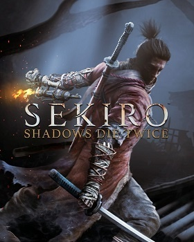

打起來最暢快的遊戲：隻狼
格檔─俗稱打鐵，因為他對刀的音效清脆富有節奏感，對boss熟悉之後可以打出很流暢的對戰，對我來說很紓壓，有時候做作業累了就會去隻狼裡打鐵一下。
格檔─俗稱打鐵，因為他對刀的音效清脆富有節奏感，對boss熟悉之後可以打出很流暢的對戰，對我來說很紓壓，有時候做作業累了就會去隻狼裡打鐵一下。
動作的遊戲性很強，boss招式不多但富有難度，還能享受探索地圖，慢慢變強的感覺，最近終於等到二代絲之歌，終於不用當小丑了，一個假日玩了40幾小時，足夠說明多麼吸引我了。